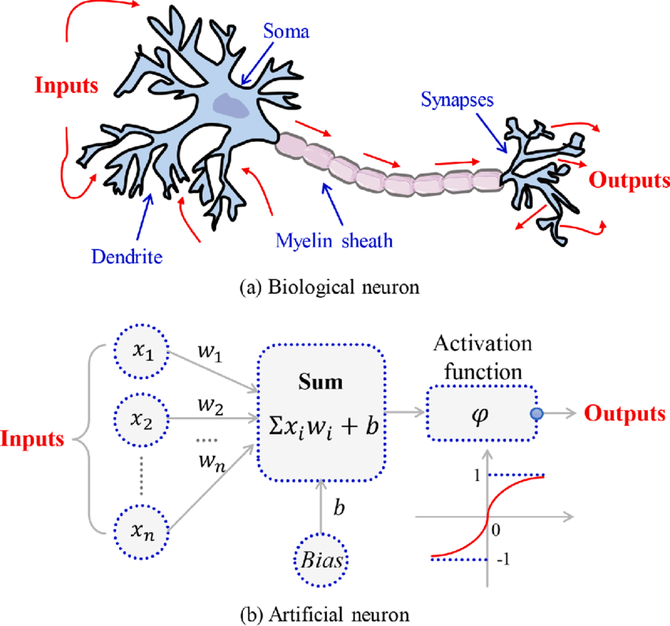

Advanced Machine Learning
Neural Networks, Deep Learning and Artificial Intelligence
From Artificial Neural Networks to Artifial Intelligence
Historical Background (1)
In the post-pandemic world, a lightning rise of AI, with a mess of realities and promises is impacting society.
Since ChatGPT entered the scene everybody has an experience, an opinion, or a fear on the topic.

Is it just machine learning?
Most tasks performed by AI can be described as Classification or Prediction used in applications as:
- Recommendation systems,
- Image recognition, Image generation
- Natural language processing
AI relies on machine learning algorithms, to make predictions based on large amounts of data.
AI has far-reaching implications beyond its predictive capabilities, including ethical, social or technological.
AI, ANNs and Deep learning
In many contexts, talking about AI means talking about Deep Learning (DL).
DL is a successful AI model which has powered many application such as self-driving cars, voice assistants, and medical diagnosis systems.
DL originates in the field of Artificial Neural Networks
But DL extends the basic principles of ANNs by:
- Adding complex architectures and algorithms and
- At the same time becoming more automatic
The early history of AI (1)

Milestones in the history of DL
We can see several hints worth to account for:
The Perceptron and the first Artificial Neural Network where the basic building block was introduced.
The Multilayered perceptron and back-propagation where complex architectures were suggested to improve the capabilities.
Deep Neural Networks, with many hidden layers, and auto-tunability capabilities.
From ANN to Deep learning

Why Deep Learning Now?
Success stories
Success stories such as
the development of self-driving cars,
the use of AI in medical diagnosis, and
online shopping personalized recommendations
have also contributed to the widespread adoption of AI.
Not to talk abou the fears
AI also comes with fears from multiple sources from science fiction to religion
Mass unemployment
Loss of privacity
AI bias
AI fakes
Or, simply, AI takeover

Back to science
Where/How does it all fit?

AI, ML, DL …
Artificial intelligence: Ability of a computer to perform tasks commonly associated with intelligent beings.
Machine learning: study of algorithms that learn from examples and experience instead of relying on hard-coded rules and make predictions on new data
Deep learning: sub field of ML focusing on learning data representations as successive successive layers of increasingly meaningful representations.
How does DL improve

Size does matter!
An illustration of the performance comparison between deep learning (DL) and other machine learning (ML) algorithms, where DL modeling from large amounts of data can increase the performance
The impact of Deep learning
Near-human-level image classification
Near-human-level speech transcription
Near-human-level handwriting transcription
Dramatically improved machine translation
Dramatically improved text-to-speech conversion
Digital assistants such as Google Assistant and Amazon Alexa
Near-human-level autonomous driving
Improved ad targeting, as used by Google, Baidu, or Bing
Improved search results on the web
Ability to answer natural language questions
Superhuman Go playing
Not all that glitters is gold …
According to F. Chollet, the developer of Keras,
- “we shouldn’t believe the short-term hype, but should believe in the long-term vision.
- It may take a while for AI to be deployed to its true potential—a potential the full extent of which no one has yet dared to dream
- but AI is coming, and it will transform our world in a fantastic way”.
The Artificial Neurone (AN)
Emulating biological neurons

- The first model of an artifial neurone was proposed by Mc Cullough & Pitts in 1943
Mc Cullough’s neuron
- It may be divided into 2 parts.
- The first part, \(g\),takes an input (as the dendrites of a neuron would do),
- It performs an aggregation and
- based on the aggregated value the second part, \(f\), makes a decision.
See the source of this picture for an illustration on how this can be used to emulate logical operations such as AND, OR or NOT, but not XOR.
Limitations
This first attempt to emulate neurons succeeded but with limitations:
What about non-Boolean (say, real) inputs?
What if all inputs are not equal?
What if we want to assign more importance to some inputs?
What about functions which are not linearly separable? Say XOR function
Overcoming the limitations
To overcome these limitations Rosenblatt, proposed the perceptron model, or artificial neuron, in 1958.
Generalizes McCullough-Pitts neuron in that weights and thresholds can be learnt over time.
- It takes a weighted sum of the inputs and
- It sets the output to iff the sum is more than an arbitrary threshold (\(\theta\)).
Rosenblatt’s perceptron
Rosenblatt’s perceptron
- Instead of hand coding the thresholding parameter \(\theta\),
- It is added as one of the inputs, with the weight \(w_0=-\theta\).
Comparison between the two

Comparison between the two
This is an improvement because
- both, weights and threshold, can be learned and
- the inputs can be real values
But there is still a drawback in that a single perceptron can only be used to implement linearly separable functions.
Artificial Neural Networks improve on this by introducing Activation Functions
Activation in biological neurons
- Biological neurons are specialized cells that transmit signals to communicate with each other.
- Neuron’s activation is based on releasing neurotransmitters, chemicals that transmit signals between nerve cells.
- When the signal reaching the neuron exceeds a certain threshold, it releases neurotransmitters to continue the communication process.
Activation functions in AN
- Analogously, activation functions in AN are functions to decide if the AN it is activated or not.
- AN’s activation function is a mathematical function applied to the neuron’s input to produce an output.
- In practice it extends to complicated functions that can learn complex patterns in the data.
- Activation functions can incorporate non-linearity, improving over linear classifiers.
Activation function
Artificial Neuron
With all these ideas in mind we can now define an Artificial Neuron as a computational unit that :
takes as input \(x=(x_0,x_1,x_2,x_3),\ (x_0 = +1 \equiv bias)\),
outputs \(h_{\theta}(x) = f(\theta^\intercal x) = f(\sum_i \theta_ix_i)\),
where \(f:\mathbb{R}\mapsto \mathbb{R}\) is called the activation function.
Activation functions
Goal of activation function is to provide the neuron with the capability of producing the required outputs.
Flexible enough to produce
- Either linear or non-linear transformations.
- Output in the desired range ([0,1], {-1,1}, \(\mathbb{R}^+\)…)
Usually chosen from a (small) set of possibilities.
- Sigmoid function
- Hyperbolic tangent, or
tanh, function - ReLU
The sigmoid function
\[ f(z)=\frac{1}{1+e^{-z}} \]
Output real values \(\in (0,1)\).
Natural interpretations as probability

the hyperbolic tangent
Also called tanh, function:
\[ f(z)=\frac{e^{z}-e^{-z}}{e^{z}+e^{-z}} \]
outputs are zero-centered and bounded in −1,1
scaled and shifted Sigmoid
stronger gradient but still has vanishing gradient problem
Its derivative is \(f'(z)=1-(f(z))^2\).

The ReLU
rectified linear unit: \(f(z)=\max\{0,z\}\).
Close to a linear: piece-wise linear function with two linear pieces.
Outputs are in %(0,)$ , thus not bounded
Half rectified: activation threshold at 0
No vanishing gradient problem
More activation functions
 .
.
Putting it all together

In words
An ANN takes a vector of input values \(x_{1}, \ldots, x_{d}\) and combines it with some weights that are local to the neuron \(\left(w_{0}, w_{1}, . ., w_{d}\right)\) to compute a net input \(w_{0}+\sum_{i=1}^{d} w_{i} \cdot x_{i}\).
To compute its output, it then passes the net input through a possibly non-linear univariate activation function \(g(\cdot)\), usually vchosen from a set of options such as Sigmoid, Tanh or ReLU functions
To deal with the bias, we create an extra input variable \(x_{0}\) with value always equal to 1 , and so the function computed by a single artificial neuron (parameterized by its weights \(\mathbf{w}\) ) is:
\[ y(\mathbf{x})=g\left(w_{0}+\sum_{i=1}^{d} w_{i} x_{i}\right)=g\left(\sum_{i=0}^{d} w_{i} x_{i}\right)=g\left(\mathbf{w}^{\mathbf{T}} \mathbf{x}\right) \]
From neurons to neural networks
The basic neural network
Following with the brain analogy one can combine (artificial) neurons to create better learners.
A simple artificial neural network is usually created by combining two types of modifications to the basic perceptron (AN).
- Stacking several neurons insteads of just one.
- Adding an additional layer of neurons, which is call a hidden layer,
This yields a system where the output of a can be the input of another in many different ways.
An Artificial Neural network

The architecture of ANN
In this figure, we have used circles to also denote the inputs to the network.
Circles labeled +1 are bias units, and correspond to the intercept term.
The leftmost layer of the network is called the input layer.
The rightmost layer of the network is called the output layer.
The middle layer of nodes is called the hidden layer, because its values are not observed in the training set.
Bias nodes are not counted when stating the neuron size.
With all this in mind our example neural network has three layers with:
- 3 input units (not counting the bias unit),
- 3 hidden units,
- 1 output unit.
How an ANN works
An ANN is a predictive model (a learner) whose properties and behaviour can be well characterized.
It operates through a process known as forward propagation, which encompasses the information flow from the input layer to the output layer.
Forward propagation is performed by composing a series of linear and non-linear (activation) functions.
These are characterized (parametrized) by their weights and biases, that need to be learnt.
- This is done by training the ANN.
Training the ANN
In order for the ANN to perform well, the training process aims at finding the best possible parameter values for the learning task defined by the fnctions. This is done by
- Selecting an appropriate (convex) loss function,
- Finding those weights that minimize a the total cost function (avg. loss).
This is usually done using some iterative optimization procedure such as gradient descent.
- This requires evaluating derivatives in a huge number of points.
- Such high number may be reduced by Stochastic Gradient Descent.
- The evaluation of derivatives is simplified thanks to Backpropagation.
Forward propagation
As described above the process that encompasses the computations required to go from the input values to the final output is known as forward propagation.
The weights are combined with the input to produce the final output.
Each node, \(a_i^{(2)}\) of the hidden layer opperates on all nodes of the input values
\[\begin{eqnarray} a_1^{(2)}&=&f(\theta_{10}^{(1)}+\theta_{11}^{(1)}x_1+\theta_{12}^{(1)}x_2+\theta_{13}^{(1)}x_3)\\ a_2^{(2)}&=&f(\theta_{20}^{(1)}+\theta_{21}^{(1)}x_1+\theta_{22}^{(1)}x_2+\theta_{23}^{(1)}x_3)\\ a_3^{(2)}&=&f(\theta_{30}^{(1)}+\theta_{31}^{(1)}x_1+\theta_{32}^{(1)}x_2+\theta_{33}^{(1)}x_3)) \end{eqnarray}\]
The output of the hidden layer is transformed through the activation function:
\[ h_{\Theta}(x)=a_1^{(3)}=f(\theta_{10}^{(2)}+\theta_{11}^{(2)}a_1^{(2)}+\theta_{12}^{(2)}a_2^{(2)}+\theta_{13}^{(2)}a_3^{(2)} \]
Eficient Forward propagation
The way input data is transformed, through a series of weightings and transformations, until the ouput layer is called forward propagation.
By organizing parameters in matrices, and using matrix-vector operations, fast linear algebra routines can be used to perform the required calculations in a fast efficent way.
Multiple architectures for ANN
We have so far focused on a single hidden layer neural network of the example.
One can. however build neural networks with many distinct architectures (meaning patterns of connectivity between neurons), including ones with multiple hidden layers.
Multiple architectures for ANN
We have so far focused on a single hidden layer neural network of the example
One can build neural networks with many distinct architectures (meaning patterns of connectivity between neurons), including ones with multiple hidden layers.
Multiple layer dense Networks
- Most common choice is a \(n_l\)-layered network:
- layer 1 is the input layer,
- layer \(n_l\) is the output layer,
- and each layer \(l\) is densely connected to layer \(l+1\).
- In this setting, to compute the output of the network, we can compute all the activations in layer \(L_2\), then layer \(L_3\), and so on, up to layer \(L_{nl}\), using equations seen previously.
Feed Forward NNs
- The type of NN described is called feed-forward neural network (FFNN), since
- All computations are done by Forward propagation
- The connectivity graph does not have any directed loops or cycles.
An example using R
A predictive ANN
We use the neuralnet package to build a simple neural network to predict if a type of stock pays dividends or not.
Data for the example
And use the dividendinfo.csv dataset from https://github.com/MGCodesandStats/datasets
mydata <- read.csv("https://raw.githubusercontent.com/MGCodesandStats/datasets/master/dividendinfo.csv")
str(mydata)'data.frame': 200 obs. of 6 variables:
$ dividend : int 0 1 1 0 1 1 1 0 1 1 ...
$ fcfps : num 2.75 4.96 2.78 0.43 2.94 3.9 1.09 2.32 2.5 4.46 ...
$ earnings_growth: num -19.25 0.83 1.09 12.97 2.44 ...
$ de : num 1.11 1.09 0.19 1.7 1.83 0.46 2.32 3.34 3.15 3.33 ...
$ mcap : int 545 630 562 388 684 621 656 351 658 330 ...
$ current_ratio : num 0.924 1.469 1.976 1.942 2.487 ...Data pre-processing
Test and training sets
Finally we break our data in a test and a training set:
Training a neural network
We train a simple NN with two hidden layers, with 4 and 2 neurons respectively.
Network plot
The output of the procedure is a neural network with estimated weights

Predictions
temp_test <- subset(testset, select =
c("fcfps","earnings_growth",
"de", "mcap", "current_ratio"))
nn.results <- compute(nn, temp_test)
results <- data.frame(actual =
testset$dividend,
prediction = nn.results$net.result)
head(results) actual prediction
9 1 0.9919213885
19 1 0.9769206123
22 0 0.0002187144
26 0 0.6093330933
27 1 0.7454164893
29 1 0.9515431416Model evaluation
From shallow to Deep NNs
Deep Neural Networks
- Neural Networks may have distinct levels of complexity.

Source: ‘Deep Learning’ course, by Andrew Ng in Coursera & deeplearning.ai
From Shallow to Deep NNs
“Deep Neural networks” are NNs with several hidden layers.
The real shift, from Shallow to Deep NNs, is not (only) the number of layers.
The difference comes from realizing that
- Some tasks as digit recognition, could be solved decently well using a “brute force” approach
- Other more complex tasks, such as distinguishing a human face in an image, where hard to solve witht that “brute” force approach.
This is often associated to working with structured vs unstructured data
Structured-Unstructured data
‘Source: Generative Deep Learning. David Foster (Fig. 2.1)’
Images are unstructured data
Task: Distinguish human from non-human in an image

Source: ‘Neural Networkls and Deep Learning’ course, by Michael Nielsen
Face recognition problem
This can be attacked as the digit recognition problem (output of “yes” and “no”), although the cost of training the network would be much higher.
An alternative approach may be to try to solve the problem hierarchically.
- We start by tying to find edges in the figure
- In the parts with edges we “look around” to find face pieces, a nose, an eye, an eyebrow …
- As we locate the pieces we look for their optimal combination.
A hierarchy of complexity

Source: ‘Deep Learning’ course, by Andrew Ng in Coursera & deeplearning.ai
A hierarchy of complexity
- Each layer has a more complex task, but it receives better information.
- If we can solve the sub-problems using ANNs,
- Perhaps we can build a neural network for face-detection, by combining the networks for the sub-problems.
- Networks with this kind of many-layer structure - two or more hidden layers - are called deep neural networks.
Automatic tuning
In order for these networks to succeed it is important not having to hand-craft the complicated structure of weights and biases required for such hierarchy of layers and functions.
In 2006 techniques enabling learning in Deep Neural Nets were developed.
These deep learning techniques are based on stochastic gradient descent and backpropagation, but also introduce new ideas.
It turns out that equiped with such techniques, deep neural networks perform much better on many problems than shallow neural networks.
Shallow vs Deep NNs
Source: ‘Deep Learning’ course, by Andrew Ng in Coursera & deeplearning.ai